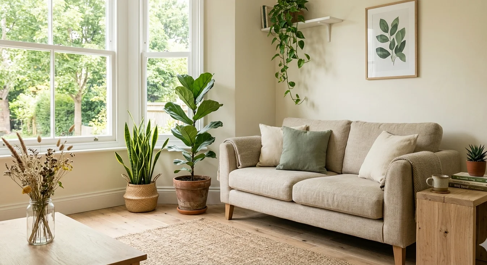

RESPONSIBLE OPERATIONS
Sustainability at LAJ Group is embedded into sourcing governance, production monitoring, environmental stewardship, and ethical trade systems — creating resilient and future-ready textile supply chains.
01
LAJ Group operates in alignment with ISO 14001:2015 environmental management standards, implementing production monitoring systems that reduce water usage, energy consumption, and waste generation across contracted manufacturing facilities.
02
Strict chemical management protocols are enforced across wet processing operations, aligned with ZDHC guidelines and supported through OEKO-TEX® STeP certified facilities for safer production and wastewater control.
03
Blockchain-enabled traceability systems support fiber verification from ginning to finished products, prioritizing GRS recycled polyester, BCI licensed cotton, and OCS-certified organic cotton programs.
04
Zero-liquid discharge systems, closed-loop recycling, solar integration, and high-efficiency machinery help reduce freshwater intensity and improve operational energy performance across facilities.
05
Strategic vendors are audited against SMETA standards covering labor practices, health & safety, environmental performance, and ethical sourcing aligned with ILO core labor conventions.
06
Post-industrial textile waste is redirected into recycled yarn systems, while sustainable packaging initiatives increasingly adopt FSC-certified paper solutions and biodegradable alternatives.
07
LAJ Group maintains recognized sustainability certifications including OEKO-TEX® STANDARD 100, GRS, and BCI, while progressing toward HIGG FEM, HIGG FSLM, and expanded SEDEX transparency systems.
08
Export packaging systems are transitioning toward recycled LDPE and paper-based materials, while optimized container consolidation strategies reduce the carbon footprint across global shipping operations.
SUSTAINABILITY
Sustainability at LAJ Group is not a bolt-on initiative — it is embedded into our sourcing architecture as a non-negotiable operating standard. We orchestrate suppliers, raw materials, and production systems around globally recognized environmental and ethical frameworks, ensuring that every shipment strengthens a more transparent, low-impact, and future-ready textile value chain.
Sustainability is not a layer at LAJ — it is the foundation.
ISO 14001: Environmental management systems across all production sites.
SMETA 4-Pillar: Labor, health & safety, environment, and business ethics compliance.
ILO Core Conventions: Strict prohibition of forced labor, child labor, and enforced freedom of association.
ZDHC MRSL: Advanced chemical management ensuring safe wet processing standards.
OEKO-TEX® STeP: Sustainable and responsible textile production certification.
GOTS: Organic fiber processing with integrated social and environmental criteria.
Sedex: Ethical supply chain transparency and data sharing framework.
AQL 2.5: Quality control system aligned with sustainability tolerances and export standards.
SUSTAINABILITY CERTIFICATIONS


Partner with us to create responsible sourcing, reduce waste, and improve transparency across your production and logistics.
WHY LAJ
LAJ Group has transformed from a local raw material sourcing facilitator in Faisalabad (early 2000s) into a fully integrated textile supply chain organization. Today, we manage procurement, production coordination, and quality assurance under one unified framework, shifting from transactional trade to strategic, governance-driven partnerships.
We operate across two primary verticals: Home Textiles including bedding sets, terry towels, blackout curtains, woven throws, and upholstery; and Apparel including casual wear, activewear, knitwear, woven garments, and core basics.
It means we oversee every stage of the supply chain—from fiber sourcing and mill coordination to production scheduling, quality inspections, and final shipment—giving clients a single point of accountability and reducing supply chain risks.
Sustainability at LAJ Group is not a department — it is the structural foundation of our sourcing, production, and logistics. We operate ISO 14001‑aligned environmental systems, closed‑loop water recycling (up to 90% reduction), and blockchain‑based traceability from fiber to finish. Every decision is measured against science‑based carbon targets and ethical frameworks including SMETA and ILO standards.
LAJ Group maintains a multi‑certification framework: ISO 14001, SMETA 4‑Pillar, ILO core conventions, ZDHC MRSL (safe chemistry), OEKO‑TEX® STeP, GOTS, Sedex, and AQL 2.5 quality controls. These are not badges — they are audited, living standards across our entire supplier network.
We use blockchain‑based material traceability from raw fiber to finished product, supported by digital product passports (DPPs) for every SKU accessible via QR code. Satellite monitoring prevents deforestation in natural fiber supply chains. Every mill, dye house, and finishing unit is mapped, audited, and documented for full transparency.
We operate under SMETA 4‑Pillar audits covering labor, health & safety, environment, and business ethics, with full alignment to ILO core conventions — no forced labor, no child labor, freedom of association. Our living wage roadmap is active across tier‑1 and tier‑2 suppliers, supported by third‑party grievance hotlines for workers and communities.
Let’s Work Together
LAJ Group connects global buyers with structured sourcing, verified production networks, and transparent export operations. From sampling to shipment, everything is managed under one accountable system.
Sourcing • Production • Quality • Export